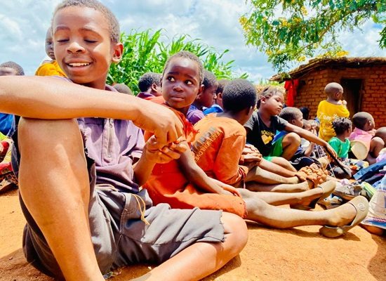
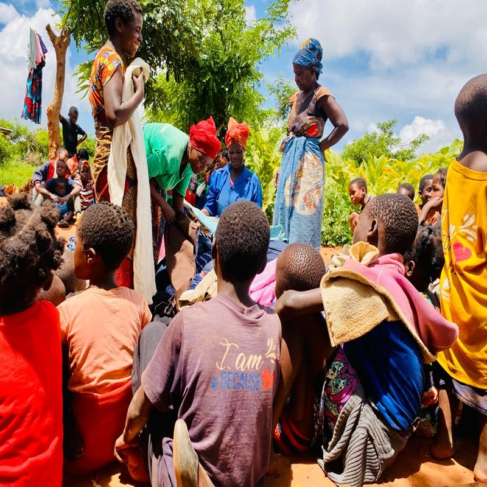
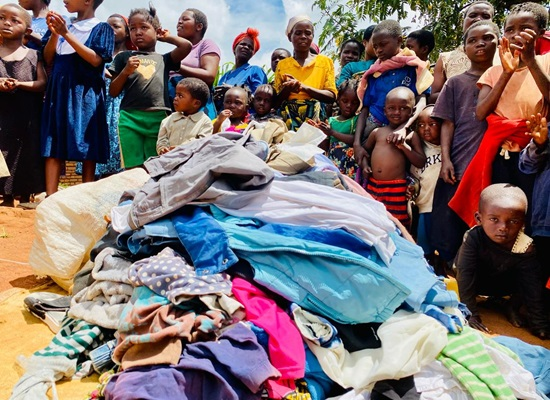

Featured Stories
Highlights From Our Community

Facebook
Jul 01, 2026
Back to School with GLO
Another group of children received uniforms, books and supplies as they head back to the classroom this term.
Read on Facebook
LinkedIn
Jun 28, 2026
Empowering Guardians
Our livelihood program is helping caregivers build small businesses and support their families with dignity.
Read on LinkedIn
Facebook
Jun 20, 2026
Keeping Children Safe
Community volunteers completed safeguarding training to better protect children at risk in their villages.
Read on Facebook Facebook
Facebook
Jun 10, 2026
Community Health Day — Vaccinations & Nutrition Support
GLO hosted a community health day delivering vaccinations and nutrition support to families in Dowa, improving access to essential care.
Read on Facebook Facebook
Facebook
May 15, 2026
Volunteers Trained in Child Safeguarding
A new cohort of community volunteers completed training in child safeguarding and community mobilization, strengthening local protection efforts.
Read on Facebook
Facebook
Apr 22, 2026
Scholarship Winners Announced
We celebrated the announcement of scholarship recipients who will attend school this term.
Read on Facebook